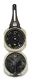

The following virtual
reality or multimedia demonstration projects and Internet links are provided
as examples of VR applications in archaeology and the social sciences.
ASTV Institute projects are noted, and Internet-based demonstration projects
and examples are included under "VR Links" or "Password Protected Resources".
Only those students enrolled in Institute classes in any given semester
will be provided password access to the demonstration samples included
under "Password Protected Resources".
A
Virtual Walkthrough of Old Mission San Juan Bautista
By Scott Bradfield, Spring 1998
[Best viewed with Microsoft Internet Explorer 4.0
or above]
Directions: This
VR model was created by way of the use of a Silicon Graphics computer platform
and the Cosmo 2.1 VR Software program. The program can be viewed on a pentium
computer with Microsoft Internet Explorer 4.0 or higher by way of the Cosmo
Player plugin. In order to view and navigate the model, it is necessary
to download the Cosmo Player plugin by clicking the "Cosmo 2.1 Player"
icon (above) or downloading from the Cosmo link at:
http://cosmosoftware.com/download/index_player.html.
Once you have downloaded the Cosmo Player, you will be
ready to begin a virtual tour and reconstruction of Old Mission San Juan
Bautista, California. In order to start the VR Navigation, after downloading
the Cosmo Player please click on the above project title ("A Virtual Walkthrough
of Old Mission San Juan Bautista"). If you would like further information
on the production requirements of the VR model in question, you may contact
Scott Bradfield at: scott_bradfield@monterey.edu
astv@archaeology.monterey.edu
VR Temple Image After Virtus VR Modelling Program.
Text and Photographs by Ruben G. Mendoza, 1998
All Rights Reserved
